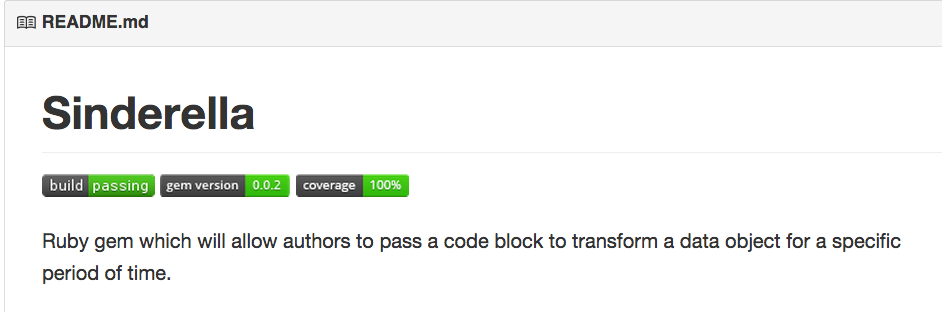
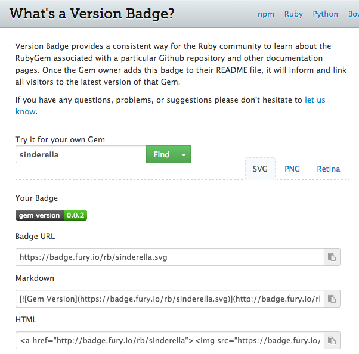

Siguiente: Preparando la Documentación Subir: Creando Gemas y Publicándolas Anterior: Local Git Repos Índice General Índice de Materias
You might have seen some nice green badges in your favorite GitHub repository, indicating whether the tests associated with the code passed or not. Adding these to the README.md
is straightforward enough:
[](https://travis-ci.org/Integralist/Sinderella) [](http://badge.fury.io/rb/sinderella) [](https://coveralls.io/r/Integralist/Sinderella)

